5A
| Valve Body Assembly Removal and Installation |
NOTICE:
•The transaxle side oil pan may become deformed during removal. If the removed transaxle side oil pan is reused, it may cause oil leakage. Do not reuse the side oil pan. Always install a new one.
•The transaxle side oil pan bolts are pre-coated with adhesive. If the bolts are reused, it may work loose.
Replace the transaxle side oil pan bolts with new ones.
•The transaxle side oil pan bolts are pre-coated with adhesive. If the bolts are reused, it may work loose.
Replace the transaxle side oil pan bolts with new ones.
NOTE:
When valve body assembly is removed or replaced, perform TCM Learning Value Clearance, Neutral Position Calibration and TCM Learning Value Initialization.
Removal
1)Disconnect negative (–) cable at battery.
2)For M16A model, remove ATF cooler pipe bolts (1).

 "Expand image")
3)For K14C model, disconnect intercooler outlet hose No.1.
4)Hoist vehicle.
5)Remove engine undercover.
6)Drain A/T fluid. 
7)Remove transaxle side oil pan (1).
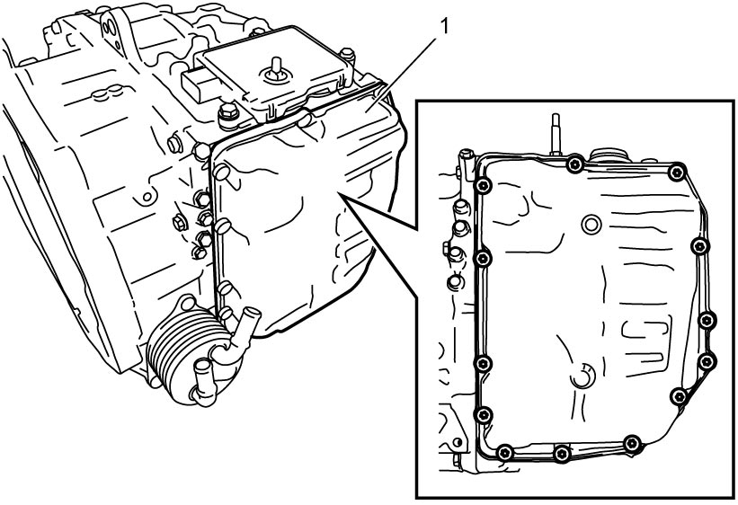
 "Expand image")
8)Remove ATF temperature sensor clamp bolt, and then remove ATF temperature sensor (1) and ATF temperature sensor clamp (2).
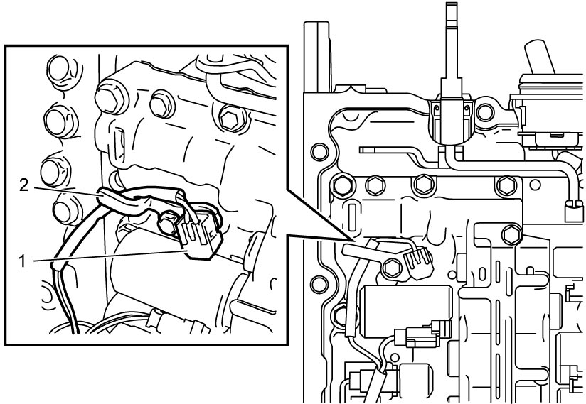
 "Expand image")
9)Disconnect solenoid connectors (1) and electro magnetic oil pump solenoid valve connector (2) (ENG A-STOP model) from solenoid valves.
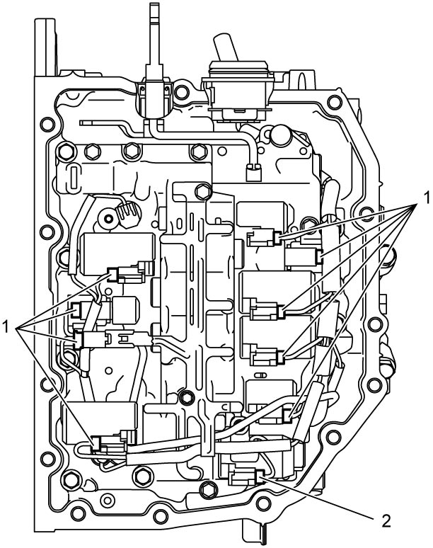
 "Expand image")
10)Disconnect output shaft speed sensor connector (1) from harness clamp.
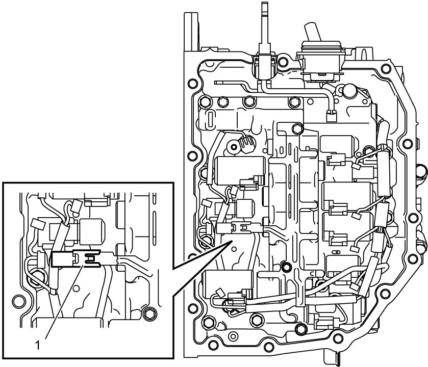
 "Expand image")
11)Remove valve body bolts, and then remove valve body assembly from transaxle case, being careful not to drop manual valve.
NOTE:
There are three types of bolts (bolts A (1), B (2) and C (3)) for fixing valve body assembly.
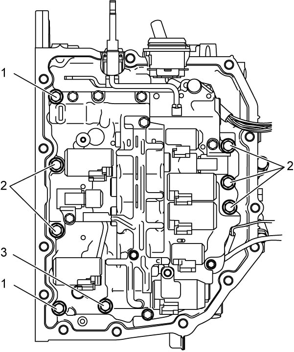
 "Expand image")
Installation
1)Install manual valve rod (1) to manual valve lever (2) and then install valve body assembly (3) to transaxle case.
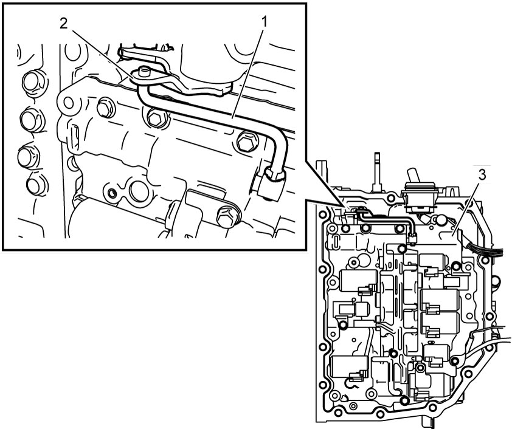
 "Expand image")
2)Tighten valve body bolts in numerical order (“1” – “8”) evenly and gradually to specified torque.
Valve body bolt length
| Bolt | Length “a” | Pieces |
|---|---|---|
| A (1) | 31 mm (1.22 in.) | 2 |
| B (2) | 21 mm (0.83 in.) | 5 |
| C (3) | 51 mm (2.01 in.) | 1 |
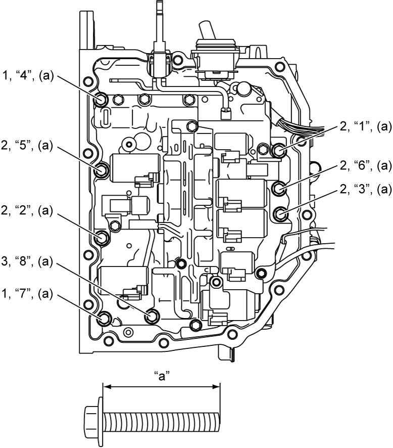
 "Expand image")
3)Install solenoid harness (1), and then connect solenoid connectors (2) and output shaft speed sensor connector (3) as shown in figure.
4)Install ATF temperature sensor (4) and ATF temperature sensor clamp (5), and then tighten ATF temperature sensor clamp bolt (6) to specified torque.
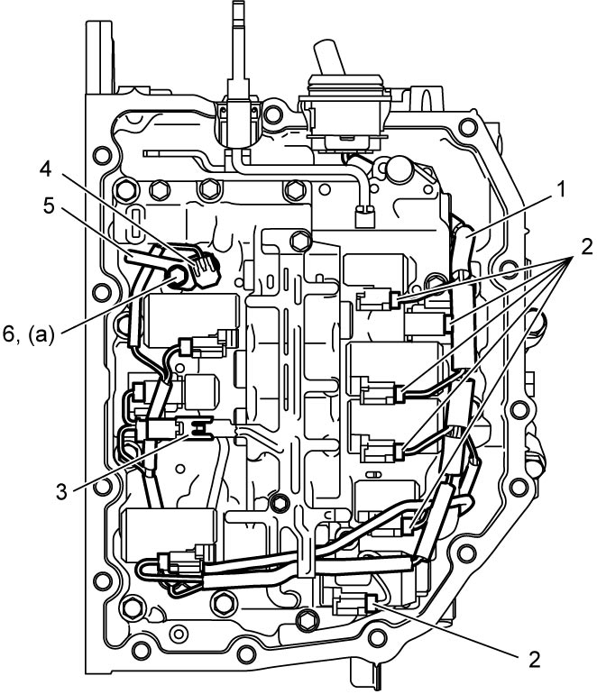
 "Expand image")
5)Apply sealant to mating surface of new transaxle side oil pan (1) as shown in figure.
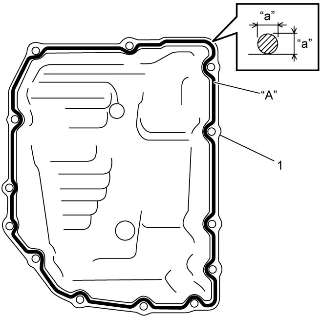
 "Expand image")
| “a”: | 2.5 mm (0.098 in.) |
6)Tighten new transaxle side oil pan bolts to specified torque.
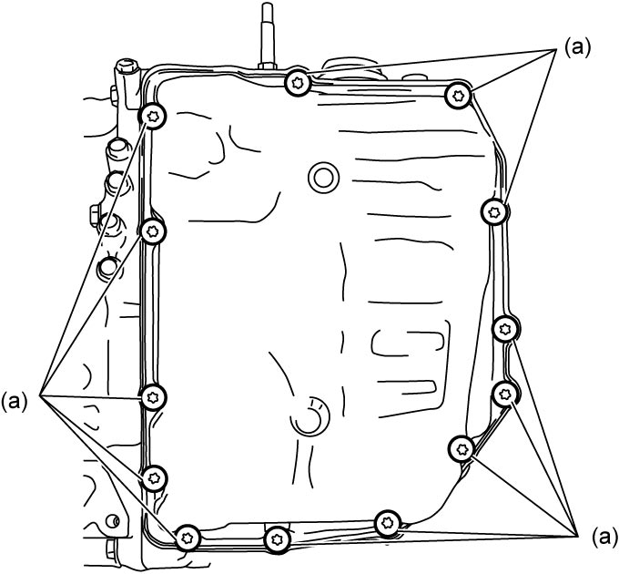
 "Expand image")
7)For M16A model, tighten ATF cooler pipe bolts (1) to specified torque.
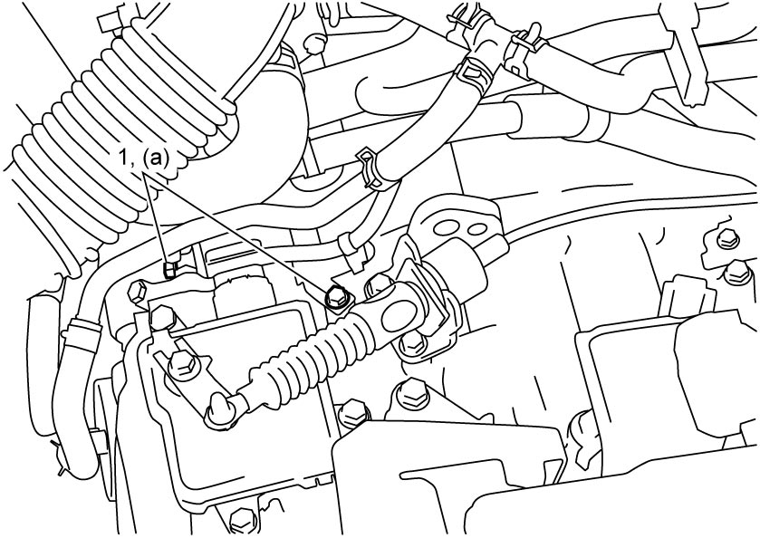
 "Expand image")
8)For K14C model, connect intercooler hose No.1.
9)Install engine undercover.
10)Connect negative (–) cable at battery.
11)Refill A/T assembly with ATF.
12)Check ATF level.
13)Perform TCM Learning Value Clearance.
14)Perform Neutral Position Calibration.
15)Perform TCM Learning Value Initialization.